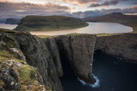
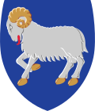

Основная статья: География Фарерских островов
Столицей и главным портом островов является город Торсхавн (население — примерно 20 885 жителей в 2017 году), расположенный на юго-восточном побережье острова Стреймой. Второй по величине населённый пункт Фарерских островов — Клаксвуйк (4773 человека).
Клаксвуйк (4773 человека)